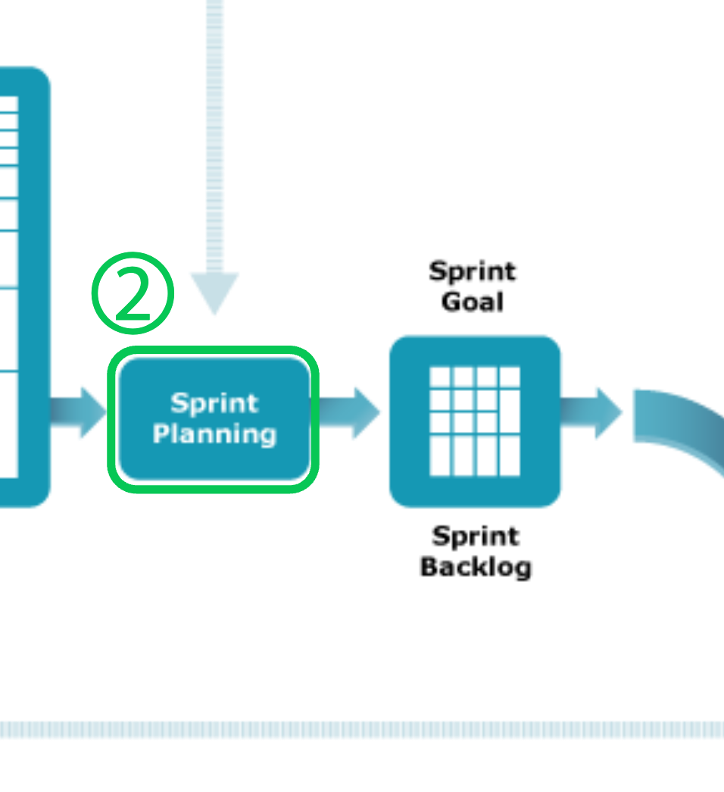

시작해보기
시작해보기
Product Backlog를 관리하는 활동 Product Owner와 개발멤버는 Product Backlog Item을 Sprint에서 즉시 착수할 수 있도록 다음을 수행
1.내용 이해 및 상세화
2.상대 견적 (공수가 아님! ex : 매그니튜드)
3.PBI 분할 및 통합
 1. Product Owner가 Product Backlog에서 가장 우선 순위가 높은 것을 개발 팀에 제시
2. 개발 멤버들의 Sprint기간 동안의 가동시간을 산출 (ex : 7일 X 5시간 = 35시간)
3. Product Backlog를 Sprint Backlog로 좀 더 구체적으로 어떻게 달성할 것인지를 서브태스크를 나열
4. 상대 견적에서 결정한 포인트보다 볼륨이 초과되는지? 가동시간과 함께 비교하여 할 수 있는 것과 할 수 없는 것을 리스트 업
5. Product Owner와 조율
6. Sprint를 시작
Sprint 기간 동안 매일 같은 시간에 개최
개발팀의 멤버 전원이 참가
회의 시간은 15분을 넘지 않는 것이 이상적
Sprint Backlog를 하나씩 검토하고 완료되었는지 확인
완료된 Sprint Backlog에 대한 구체적인 기능과 변경 사항을 시연
피드백을 팀원과 논의하면서 필요에 따라 Product Backlog를 조정
종료된 Sprint를 되돌아보고, 무엇이 잘 되었는가, 무엇이 개선의 여지가 있었는지를 논의하고 대책을 세움
Last modified: 17 4월 2024